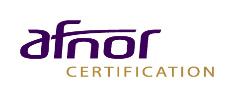
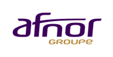
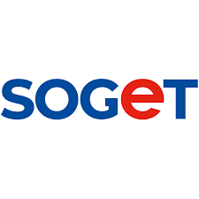

Cabinet de conseil, audit et formation spécialisé ISO/IEC 27001, OSINT et QSE. Nous transformons la conformité en avantage stratégique pour les PME et Grands Comptes.
Ils nous font confiance



Une approche globale des risques.
Accompagnement stratégique vers la certification ISO/IEC 27001 et structuration du SMSI.
Audits à blanc, audits internes et évaluation de maturité des systèmes d'information.
Renseignement en sources ouvertes pour anticiper les menaces et protéger l'e-réputation.
Montée en compétence des équipes et sensibilisation aux risques numériques et QSE.
Des secteurs exigeants, des clients ambitieux.
Structurez votre gouvernance sécurité avec une approche pragmatique, loin des contraintes bureaucratiques.
Nous accompagnons les organisations dans la construction et l'évolution de leur Système de Management de la Sécurité de l'Information (SMSI) ISO/IEC 27001 comme un levier stratégique, et non comme une contrainte normative.
Notre approche pragmatique permet d'intégrer la sécurité de l'information dans vos processus existants, de structurer durablement la cybersécurité en interne et de répondre aux exigences de vos clients, partenaires et marchés.
ISO/IEC 27001 devient ainsi un outil de gouvernance, de crédibilité et de performance, au service de la croissance.
Nous réalisons des audits ISO/IEC 27001 indépendants pour vous donner une vision claire et objective de la maturité réelle de votre Système de Management de la Sécurité de l'Information.
Au-delà de la conformité à la norme, nos audits permettent d'identifier les risques prioritaires, d'évaluer l'efficacité de votre gouvernance sécurité et de mesurer l'alignement entre vos pratiques, vos enjeux cyber et vos objectifs business.
Vous disposez ainsi d'un véritable outil d'aide à la décision pour préparer une certification, sécuriser un audit externe (clients, partenaires) ou piloter efficacement l'amélioration continue de votre cybersécurité.
L'autonomie a ses limites face à la complexité normative. Notre expertise garantit un retour sur investissement rapide et sécurisé.
Discuter de votre projetAu-delà de la sécurité numérique, nous structurons vos démarches Qualité, Sécurité et Environnement. Nos audits permettent d'aligner vos processus opérationnels avec les standards internationaux pour une performance globale.
Des formations à la demande pour vos équipes. Nous transformons vos collaborateurs en acteurs de la sécurité. Programmes sur-mesure adaptés à votre secteur d'activité et vos outils.
À disposer d'une vision claire et objective de la maturité de votre cybersécurité, d'identifier les risques prioritaires et de sécuriser vos décisions (certification, audit client, pilotage interne).
Non. ISO/IEC 27001 est avant tout un outil de structuration et de gouvernance. La certification est une option, pas une obligation.
Pour éviter une démarche trop théorique ou chronophage et construire un SMSI pragmatique, proportionné et réellement applicable, aligné avec les enjeux business et opérationnels.
Oui. ISO/IEC 27001 s'intègre aux systèmes et processus existants (QSE, ISO 9001, IT, projets) afin d'éviter les doublons et de maximiser la valeur créée.
"Nous croyons fermement que la sécurité ne doit pas entraver le business. Notre mission est de rendre la gouvernance cybersécurité lisible, accessible et créatrice de valeur."
En savoir plus sur K-RIONÉchangez avec un expert senior sur vos enjeux de conformité, d'audit ou de formation. Réponse sous 24h ouvrées.